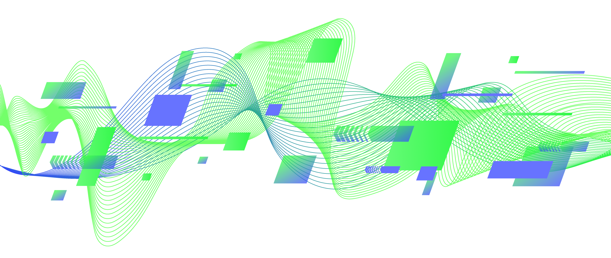

Bem-vindo à EvenTech

Destaques
Aqui você encontrará os eventos mais recentes e populares da EvenTech.
Próximos Eventos
Confira os eventos que estão por vir e não perca a oportunidade de participar!
Sobre Nós
A EvenTech é uma plataforma dedicada a conectar pessoas interessadas em tecnologia e desenvolvimento de software. Nosso público-alvo inclui desenvolvedores, designers, estudantes e entusiastas da área de tecnologia. Nosso objetivo é fornecer informações sobre eventos, workshops e conferências em Porto Alegre, além de criar uma comunidade engajada com oportunidades de networking e aprendizado.
Missão
Nossa missão é promover a troca de conhecimento e experiências entre profissionais e entusiastas da área de tecnologia, contribuindo para o crescimento e desenvolvimento da comunidade tech em Porto Alegre.
Como surgimos
A EvenTech surgiu da necessidade de criar uma plataforma que conectasse profissionais e entusiastas da área de tecnologia em Porto Alegre, proporcionando oportunidades de aprendizado e networking.
Como Funciona
Descubra como a EvenTech pode ajudar você a se conectar com a comunidade tech de Porto Alegre.
Palestrantes especiais estarão presentes em cada evento, compartilhando suas experiências e conhecimentos com a comunidade, além de proporcionar uma experiência rica e informativa.
Mapa do Local
Confira o mapa do local onde os eventos da EvenTech serão realizados: